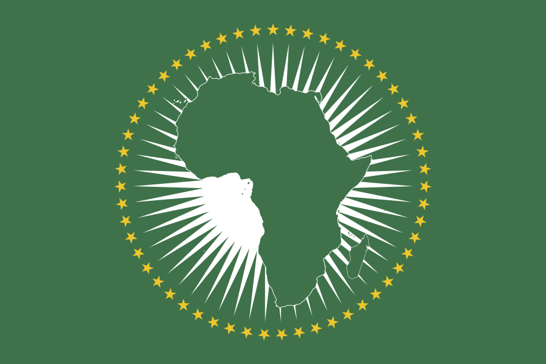

ACDRM's continental knowledge and analytics platform, built to generate and disseminate the disaster risk intelligence African governments and institutions need to make better decisions.
The Observatory is a continental knowledge and analytics platform, consolidating disaster risk data, hazard analysis, and policy research into intelligence that decision-makers can act on.
By turning fragmented data into clear, comparable insight, the Observatory gives governments, partners, and institutions a shared evidence base for policy, planning, and investment in resilience.
Collecting, structuring, and analysing disaster risk data from across the continent into decision-grade insight.
Mapping hazards and exposure to support preparedness, planning, and targeted investment.
Translating evidence into policy recommendations, briefs, and toolkits for institutional reform.
A flagship annual report consolidating continental risk intelligence into one authoritative reference.
Once a year, the Observatory publishes a consolidated analysis of disaster risk across Africa, hazard trends, exposure, institutional readiness, and policy insight, giving governments and partners a single, credible reference point for action.


Collaborate on data, research, and the Annual African Disaster Risk Report.
Get Involved →